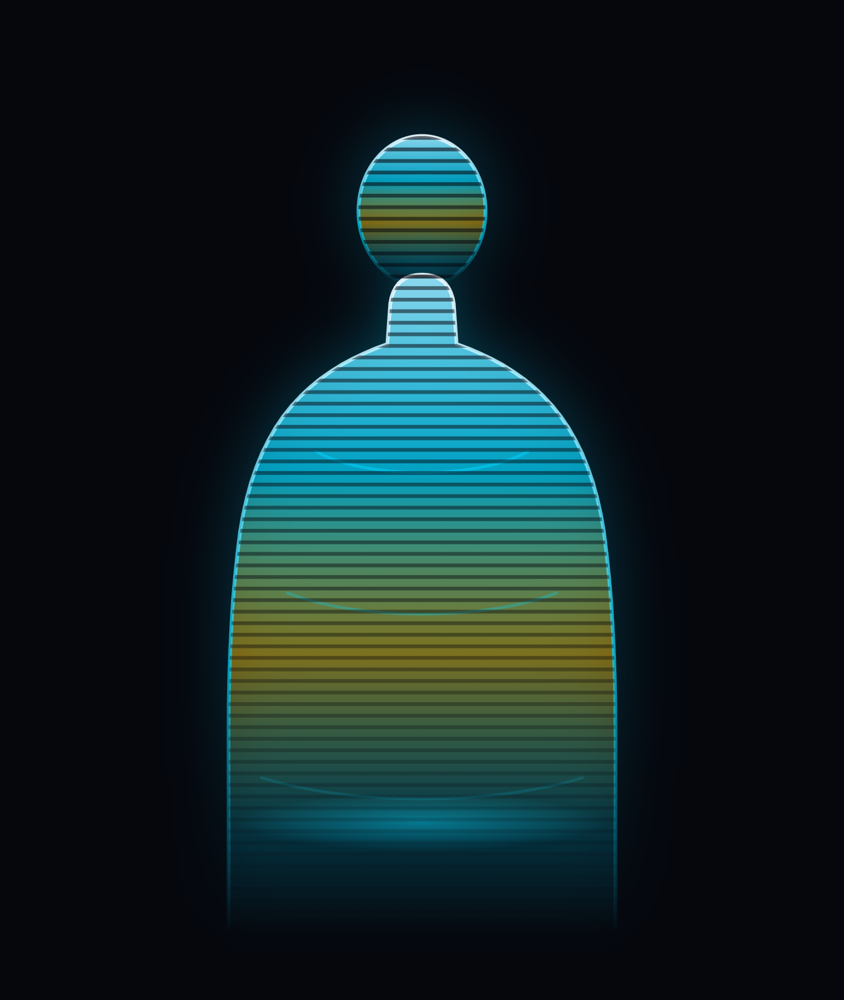
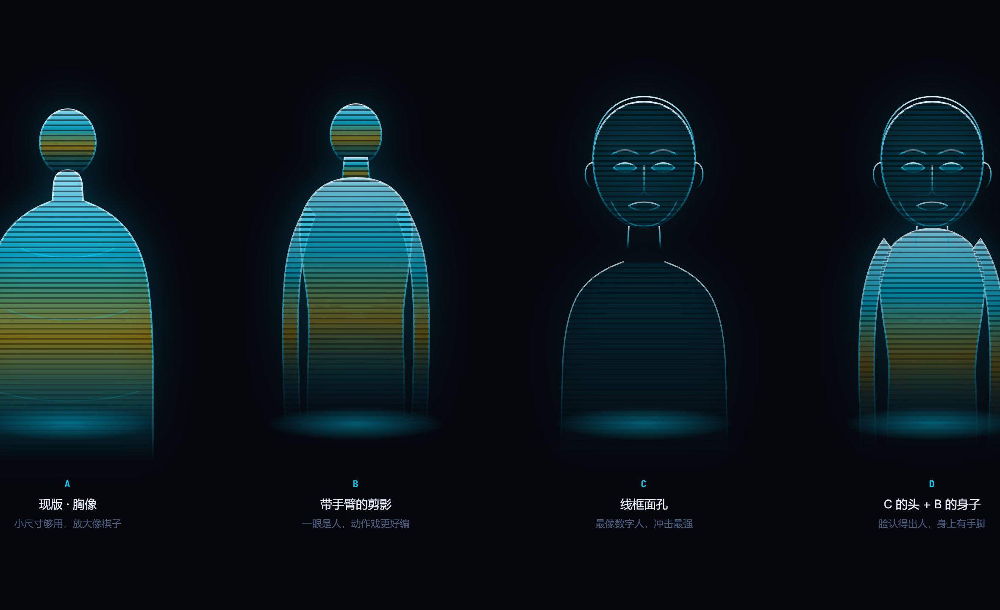
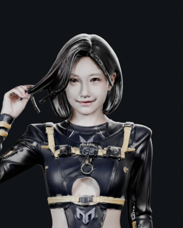

现状：小尺寸够用，放大就露怯。 头是一个球、脖子是一截桩、身子一整块，没有手臂，那三道结构线放大看像划痕 —— 整体更像棋子或花瓶，不太像「人」。缩到 App 里的 110–180px 还能看， 但一出场放大到大尺寸，问题就藏不住了。

| 方向 | 长什么样 | 好处 | 代价 |
|---|---|---|---|
| A 胸像 | 现在这一版 | 干净、结构简单，缩到 110px 还认得出 | 放大像棋子；没手脚，编不了动作 |
| B 剪影 | 带手臂的站姿剪影 | 一眼就是「人」；抬手、鞠躬、走路都好编 | 脸是空白的，本质是剪影 |
| C 线框面孔 | 有五官、耳朵、下颌的线框头 ＋ 肩 | 最像「数字人」，未来感最强，脸在里面 | 正脸固定，转不了头 |
| D 组合 | C 的头 ＋ B 的身子 | 认得出脸、身上有手脚，最完整 | 元素最多，缩到最小尺寸会有点糊 |

这不是我画的，是你自己项目里已经绑好骨、渲好帧的那个模型。
工程在 projects/digital-human/out/dh_rigged.glb，
另外还有六段现成动作的渲染帧与成片：呼吸 / 打招呼 / 走 / 转身 / 蹲 / 伸展。
也就是说「她从黑屏里走出来」这一段，可以不是动画，而是真让她走一下。